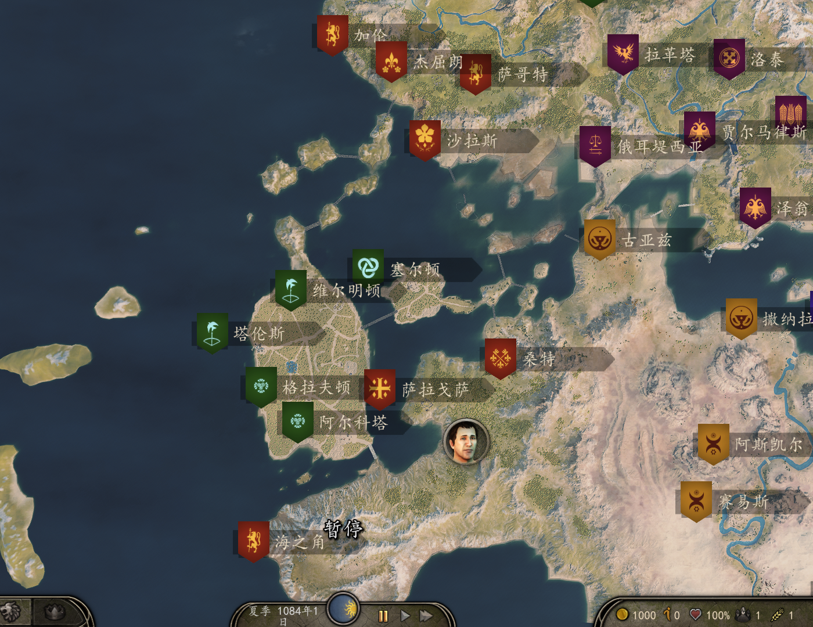
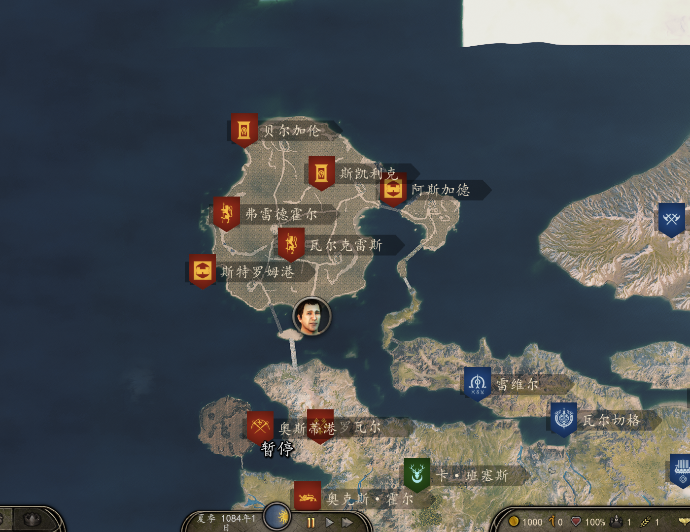

2024年5月5日（红字为赞助版）
5月5日更新星星扩展赞助版4.1.5（相对于上个版本不需要开新档）
新增两个新特殊英雄：
星星店主-梅梅
重装工兵-安德鲁
所有多发技能书技能修改：由100%多发改成50%概率触发多发。
进一步调低力神士兵刷新率
力神套减伤由6点调整至3点
调高“彗星”的数量，现在“彗星”和手持弩炮只能在安德鲁身上装备。
调整和修复其他已知问题。
2024年4月28日
4月28日更新星星扩展赞助版4.1.4（相对于上个版本不需要开新档）
装备和士兵调整：
暗影系列护甲大幅降低、力神套装护甲大幅降低；
降低很多武器的伤害；
力神弩炮兵箭矢减半，伤害降低30点；
大幅削弱力神系列士兵、黑暗卫兵的技能；
花仙子免伤机制修改：由免疫固定值的伤害改为受到的所有伤害降低50%，觉醒花仙子降低75%。
删除国王亲卫特殊技能；并调整技能点。
带“授衔”名字的士兵伤害由之前的提升40%改为提升10%，国王亲卫由之前的伤害提升80%改为20%（之前没开技能时，国王亲卫伤害会默认提升80%）。
降低了力神系列士兵的刷新概率；（现在不在是每一个部队都有）（新档生效）
芬里尔之爪里面不会再出现黑暗卫兵；
玩家亲卫满级改为66级，也就是13阶兵，现在玩家亲卫升级非常困难。
花仙子新增升级路线：莲（骑射），该兵种无减伤机制。
英雄技能调整：
维恩-原子军营最大人数由1000改为500；
雨亦奇-通过纱布治疗玩家或同伴时获得的熟练度翻倍；
布恩S级-S级之后练兵技能对生效对象由“0-3级”改为“5-13级”
2024年4月26日
4月26日更新（公共版本的番外更新，版本号F4.1.0.2_Balance（适配1.2.7-1.2.9），注意与赞助版不通用。不需要开新档）
此版本是对平衡方面进行了大幅调整。改变之前的力神系列士兵和国王亲卫一家独大的局面。
削弱力神系列士兵技能值和武器伤害以及移速。（改名：力神步兵->力神重装步兵，力神弩炮兵->力神重装弩炮兵；
力神套装免疫伤害调整（由免疫6点以下伤害调整为免疫3点以下伤害）。
大幅削弱力神套装和黑暗卫兵套装的护甲值。
削弱黑暗卫兵技能和伤害。
弩炮矢数量减半（8->4），伤害降低（160->130）。
所有多发技能书的多发效果修改：远程武器必定多发->远程武器50%概率触发多发效果。
亲卫提拔技能增幅由110改为50；
取消国王亲卫技能；
所有带“授衔”的士兵伤害提升10%，所有国王亲卫伤害提升20%；(此前版本是提升40%和80%)
去掉花仙子免伤机制；
注意！由4.1.0.2版本过渡到4.1.0.2_Balance可以不用开新档！！旧档能直接更换此版本，没有任何影响；
2024年4月07日
4月07日更新-平凡世界系列mod
具体内容请点击上方导航栏的“新MOD”前往查看。
主要是流浪者模块增加了性格系统，每个NPC都有自己独特的性格，性格也会影响其他相关事件等等。
2024年4月05日
4月05日更新（赞助版4.1.3，适配1.2.7-1.2.9，只在赞助群提供下载，不需开新档）
2024.04.05更新赞助版，版本号4.1.3，适配1.2.7-1.2.9（不需要开新档）
修改亡灵护甲模型；
现在玩家亲卫在更换装备之后能够通过对话的方式恢复默认装备；
修复同伴数量容易与其他mod导致冲突的问题；
修复4.1.2版本亡灵护甲对士兵不生效的情况；
修复亲卫换装时，如果装备不全，则需要1000万的情况；
从此版本开始，反星联盟英雄能够通过其他mod加入玩家部队，且不会报错；
现在多发技能将会在任意场景生效，不管是竞技场还是劫狱。
调整芬里尔之爪的人数和士兵种类，现在人数更少，精锐度更高。（新档生效）
修复其他已知问题；
2024年3月17日
3月17日更新（赞助版4.1.2，适配1.2.7-1.2.9，只在赞助群提供下载，不需开新档）
2024.03.17更新赞助版，版本号4.1.2，适配1.2.7-1.2.9（不需要开新档）
修复亡灵护甲、力神护甲减伤机制失效问题；（亡灵护甲减伤由之前版本的30改为20）
修复部分英雄B级血量加成不到1400的问题；
部分英雄技能调整：
索菲娅被动技能：如果被索菲娅攻击的单位比索菲娅的血量高，造成5倍伤害。（赞助版）
匠神被动技能：匠神被血量高于500的单位攻击时，受到的伤害减少90%。（赞助版）
另外，新系列mod【平凡世界】重要更新：（赞助版）
此系列mod主要特色：贴近原版、高兼容性、高稳定性、高互动性
此系列mod现已发到群里的有：特质有用化、宝箱野怪、只招募英雄（限制招兵）、美化、军营
此系列mod下周可能发布的：更多流浪者与更多互动和随机事件，新版地图
特质有用化主要内容与重要更新：
[特别提醒：此系列mod平衡性更贴近原版一点，特别是技能上限方面，终极技能通常都是很难升上去的，如果使用其他mod将等级提升到四五百甚至更高的话可能会降低难度。]
当前版本的分为两个部分，特质有用化和原本的上三路终极技能强化。
特质部分：（当成换行符，我懒得删了）
无畏：血量+60大胆：血量+30谨慎：血量-6，视野+6；非常谨慎：血量-12，视野+12
理性（谋略+2）：部队速度+0.9，视野+9，同伴上限+3理性（谋略+1）：部队速度+0.45，视野+6冲动：增加30点血量，增加每日额外支出，减少影响力；鲁莽：增加45点血量，增加每日额外支出，减少影响力
优厚：部队士气+18，每人多给1第纳尔工资，城镇忠诚+1.2，部队上限+30，同伴上限+6慷慨：部队士气+9，每人多给0.5第纳尔工资，城镇忠诚+0.6，部队上限+15，同伴上限+3小气：部队士气-3，每人少给0.5第纳尔工资，城镇忠诚-0.3吝啬：部队士气-9，每人少给1第纳尔工资，城镇忠诚-0.6
可敬：部队上限+36，每日影响力+2，同伴上限+6诚实的：部队上限+18，每日影响力+1，同伴上限+3狡诈（荣誉-1）：俘虏上限+30狡诈（荣誉-2）：俘虏上限+60
慈悲：每日增加[英雄等级*10]点魅力值经验，部队上限增加30，同伴上限+6仁慈：每日增加[英雄等级*5]点魅力值经验，部队上限增加15，同伴上限+3残忍：部队上限-15残虐：部队上限-30
终极技能强化部分：
单手：[天赐神力]到达300级之后，单手武器伤害提升40%，此后每升一级再额外提升0.2%。[无畏勇士]到达300级之后，使用单手武器击中敌人后回复3点血量，之后每升一级额外回复0.1点血量。
双手：[大步流星]到达300级之后，步行移速提升10%。[致命打击]到达300级之后，使用双手武器伤害提升20%，此后每升一级再额外提升0.2%。[重装步兵]到达300级之后，手持双手武器时，受到所有伤害降低30%。
长杆：[风卷残云]到达300级之后，长杆挥动速度提升20%，此后每提升一级，挥动速度再提升0.3%，不超过80%。[嗜血之刃]到达300级之后，使用长杆武器击中敌人必定回复一点生命值。
弓：[快速填装2.0]到达300级之后，弓箭填装速度提升30%。此后每升一级，额外提升0.5%填装速度，不超过80%。[备用箭袋]到达300级之后，每个箭袋额外增加10支箭，此后每升3级再额外增加一支。
弩：[百钧弩]到达300级之后，弩矢伤害提升30%，此后每升1级提升0.5%。[麒麟臂]到达300级之后，装填弩的速度提升40%。此后每升10级，再提升1%。[无底箭袋]到达300级之后，弩矢数量每袋+12。
投掷：[力臂冠军]到达300级之后，所有投掷物初速度增加40%。此后每升1级再增加0.5%，最高不超过60%。[移动弹仓]到达300级之后，投掷类武器数量每袋增加5个，此后每升20级再额外增加1个。
骑术：[钢铁战马]到达300级之后，骑马硬直抗性增加50%，[不死坐骑]到达300级之后，骑手每次受到伤害，坐骑回复10点血量，此后每升1级，回血量增加0.5。
跑动：[重装泰坦]到达300级之后，血量大幅提升，具体数值与单手、双手、长杆、跑动四项技能有关。[狂暴疾行]到达300级之后，步行速度提升10%。此后每升一级+0.1%。
2024年3月3日
3月3日重要更新（赞助版4.1.1，适配1.2.7-1.2.9，只在赞助群提供下载，不需开新档）
2024.03.03更新赞助版，版本号4.1.1，适配1.2.7-1.2.9（不需要开新档）
此次更新对星星扩展整体代码进行了全面的优化，优化了很多早期写得很累赘的代码。
所有加血机制由战场即时加血变成了补丁式的永久加血。
修改所有国王亲卫加血机制，现在对面队伍有国王，都会有加成，即使国王倒下，撤退重进依然有加成。
原荣新增技能：急行军。开启此技能之后，玩家部队将会获得10-50点移速加成并持续1天。急行军结束，玩家将会减少2-15点移速持续1天。（赞助版）
调整了风休住、柯凌外貌。
调整多发效果：所有多发技能书在士兵使用时效果减半。英雄使用时不变化。现在国王亲卫默认多发由之前的多1发为多3发,五阶多发书士兵使用时多发为多4发。（英雄为8发）
修复雨亦奇治疗全队失效问题。
修复其他问题。
赞助群发布新mod：特质有用化、宝箱野怪、同伴随机事件。（赞助版）
2024年2月25日
2月25日重要更新（赞助版4.1.0，适配1.2.7-1.2.9，只在赞助群提供下载，需开新档）
2024.02.25日更新赞助版：版本号4.1.0。适配1.2.7-1.2.9（需要开新档！！！注意，此次更新必须开新档才能玩！），另外，由于此次更新的地图编辑文件被我弄没了，所以地图上某些地方可能不是很完美，而且现在由于编辑器文件丢失，很难再去调整，所以还请大家理解一下。
扩大地图地形：增加两座岛屿和新的城镇。（赞助版）
 匠神真身大小调整为正常大小的1.5倍，匠神移速加快，且不受重量影响；
花仙子免疫时间由开战前20分钟调整为开战前12分钟；
此次更新又新增8个家族，现在一共就是16个新的mod家族（不包括雇佣兵家族）。
调整火焰技能和阿尔法突袭，使用这两个技能时玩家血量消耗增加。
所有文化授衔士兵的伤害变为基础伤害的1.3倍；
所有8个国家亲卫的伤害变为基础伤害的1.5倍（不开启亲卫技能也会生效，开启亲卫技能之后不生效）
降低钨钢复合弩的初速度。
现在开启士兵多发之后，所有亲卫远程均有多发！
亲卫技能调整：
拉盖娅亲卫：击中回血量有30改为45。
温吉德宫殿卫士：钝伤减免由减免70%改为减免90%。暴击几率=1.5-受击者血量百分比
新增两件肩甲，调整部分士兵装备。
2024年2月16日
2月16日（赞助版4.0.9，适配1.2.7-1.2.9，只在赞助群提供下载）
2024.02.16更新赞助版：版本号4.0.9，适配1.2.9（不需要开新档）。
重要修复：修复大地图的内存溢出报错（现在大地图内存溢出的报错大幅降低，但并不是百分百不会出现，如果还是遇到了，重启电脑能100%解决）。
修复其他报错。
恢复大地图天气变化。（之前为了减少内存溢出去掉了）
亲卫技能调整：德泰尔亲卫的人数加成伤害减半，加里俄斯老兵减伤由40改为32。
亡灵护甲重要调整：由免疫30以上伤害改成最高承受30伤害。
新增士兵：力神弩炮兵（和力神一样的刷新机制，但不会在海之角村子中刷新，而是随机村子刷新，每日刷有5%概率在全图某个城镇的村子刷新。对于旧档可能不会在领主初始部队刷新，但会在神秘人刷新。）
2月19日对此版本进行的补丁修复：
主要内容是修复1.2.9以来英雄技能血量加成无效的问题；修复部分英雄技能问题，修复顾成招募中出现的问题。玩家勾选亲卫可招募时，国王亲卫不会在变成逃兵也不会逃跑。也能够存入原子军营。
顺便加了一个14英雄的终极技能（所有英雄在场时按ctrl+鼠标左键+鼠标右键），14英雄将围绕玩家组成圆阵持续数秒，此期间所有英雄血量回满。但是必须14英雄均在场且都活着才生效。单次战役只能使用一次。
2024年2月8日
2月8日（赞助版4.0.8，适配1.2.7-1.2.9，只在赞助群提供下载）
2024.02.8更新赞助版：版本号4.0.8，适配1.2.9（不需要开新档）。在这里提前祝大家新年快乐！
修复因一部分装备导致的加载存档和另存为报错；
削弱部分武器的伤害。
大幅提升各个文化的资深民兵强度。
新增所有国王亲卫的新机制（以下机制不管是否为国王带队，都生效。国王带队的700血机制仍然生效。所有国王亲卫在玩家部队中超过一天将会逃走，存储进原子军营将会转化为逃兵，注意：城镇驻军中的国王亲卫不会逃走也不会转化，和其他士兵一样能正常被玩家使用。）
注意：mod选项里面能够开启或者关闭这些技能（默认可能是关闭状态）；
1.拉盖娅的亲信（击杀回血）：每次攻击造成大于等于15点的伤害时，自身回复30点生命值。
2.加里俄斯老兵（单次承伤上限）：最高单次承受40点伤害，所有超过40的都会变成40；
3.卢孔的精锐（百分比伤害，百分比扣血）：伤害公式为：单次伤害=被攻击者当前血量*50%（最低不低于10），单次受伤如果超过当前血量的50%会变为50%，总血量低于10时不再生效。
4.朗瓦德的铁腕（血越少伤害越高）：伤害公式为：单次伤害=基础伤害+(血量上限-当前血量)/2;
5.卡拉多格的随从（杀人越多伤害越高）：伤害公式为：单次伤害=基础伤害+该士兵击杀人数*10；卡拉多格随从在战场的移速永久加+1;
6.德泰尔的冠军骑士（人数越多伤害越高，击杀回血）：伤害公式为：单次伤害=基础伤害+战场冠军骑士总数*4，总数大于10时才生效；任何时候都免疫坠落伤害；每次击中回复20%伤害的血量；
7.蒙楚格的牧羊人（远程伤害减免，击杀回血，时间越久伤害越高）：受到所有远程伤害减半，每次击中敌人回复3点血量，伤害计算公式：单次伤害=基础伤害+当场战役总时间(s)/10;
8.温吉德的宫殿卫士（钝伤减免，对方血量越少越容易造成暴击）：受到所有钝击伤害减至30%，攻击附带暴击效果（暴击几率=1-受击者血量百分比，暴击伤害=基础伤害*（2.5-攻击者血量百分比））
优先级：所有英雄技能的优先级均在亲卫机制之后，当多种亲卫相遇时，各自技能有50%概率生效，比如德泰尔的冠军骑士增加了200伤害，但是遇到加里俄斯老兵，那么有50%概率被减少为40；
再次声明一下，新增的特殊机制可以在mod选项里面开启或者关闭，默认可能是关闭状态，自己根据情况使用即可。
2024年1月14日
1月14日（赞助版4.0.7，适配1.2.8，只在赞助群提供下载）
简介：此次更新主要是优化性能，解决卡顿问题，还有就是通过增改部分英雄技能来避免某些问题。(不需要开新档)
修复与反星联盟的城战中，严重卡顿的问题（主要是更换了部分装备）。
花仙子士兵的机制做了细微调整：相比与以前，现在花仙子在受到伤害最低值以下的伤害时，不会显示具体伤害数值，只有击杀才会显示伤害数据。（这么做也是为了优化性能）
匠神缴械技能改为反伤：匠神受到伤害值大于5点的伤害时，攻击者会受到二倍该数值的伤害，此机制会在所有场景生效，不管是竞技场还是军营或者战斗场景。
茱莉亚新增技能：新增一个将所有家族部队传送至玩家部队身边的功能。
顾成招募新增渠道：找顾成的父亲询问一件特殊物品，获得这个物品之后可直接让顾成和顾国两人加入玩家部队。
2024年1月12日
1月12日（全新赞助版4.0.6，适配1.2.8，只在赞助群提供下载）
2024.01.12更新赞助版：版本号4.0.6（不需要开新档）
多发飞刀技能削弱：玩家与诺雅结婚后，玩家使用多发飞刀的数量只有诺雅的1/3。
英雄快速升级渠道：现在任何模式都可以找王凯莉快速升级英雄（CBAS级），但是都需要花费不少第纳尔或者特殊物品。（赞助版）
更新部分士兵装备，并加入部分士兵新的升级路线；（大幅提升帝国高级兵强度）
新增大概十来件新武器，已添加至星星商店；
暗影弓箭手削弱：暗影弓箭手的多发数量由8改为3，且可转移；
海之角村子的特殊士兵刷新率由8%改为4%；
修复匠神之锤其他人能够使用的bug；
匠神现在能够巨大化，巨大化后的血量为2W，可通过对话来决定是否使用此技能；
（注意，巨大化只是体型，武器不会巨大化，且不会有踩踏伤害，所有请根据自己的需要决定是否使用。）
流浪星星模式下的三个boss也会巨大化，巨大化之后的血量分别为20W、15W、15W;
2024年1月5日
1月5日（公共版4.0.4，适配1.2.7-1.2.8）
2024.01.04更新：版本号4.0.4（相较于4.0.x版本和3.7.1版本均不需要开新档，更新后旧档能够继续玩。如果你是第一次玩本mod，必须开新档才能使用。）
更换所有免伤机制计算方法，现在更加合理以及不容易触发bug，包括一下减伤：
力神步兵套装的低于6点伤害免疫机制，亡灵套装的高于30点伤害的免疫机制，神圣套装的短暂无敌机制（此机制可以用来规避暗影诺雅的突袭）
去掉旧版本蜗牛壳的免伤机制；
修复在野外遇到帝国起义军头领时的对话崩溃问题；
减少野怪部队中士兵兵种数目和数量范围；
增强风休住对玩家的回血能力，但是现在只在风休住活着的时候生效；
原荣在部队时，部队速度具有额外加成；
匠神的近战缴械技能改为：只要近战击中匠神的，将会“被”丢掉装备栏前三个武器；
赛特新增一把中等长度武器：赛特重锤（星星商人出有卖），持这把武器时，赛特的周围的圈由三米半径变为两米，依然能和布恩触发并肩作战技能，也就是说，当前赛特可以选择两种不同的主武器来使用。
诺雅新增战斗技能：多发飞刀，远程武器中只有飞刀能够触发此技能，这个与之前的那些多发有点不同，这个不是随机分布的多发。
和诺雅结婚的话，玩家也会学习到此技能；
修复之前一部分英雄技能没有生效的问题；
修复之前一部分英雄技能升级失败问题；
小结：本次更新修复了之前一部分英雄技能不生效的问题，并且修改了一部分技能，是的相关英雄的强度得到大幅提升，特别是匠神和赛特，再一次站起来了。
2024年1月2日
1月2日（公共版4.0.3，适配1.2.7-1.2.8）
2024.01.02更新：版本号4.0.3（相较于4.0.x版本和3.7.1版本均不需要开新档，更新后旧档能够继续玩。如果你是第一次玩本mod，必须开新档才能使用。）
修复原子军营无限刷兵问题；
修复亡灵护甲、钨钢护甲免疫时，用盾挡住反而加血的情况；
修复和反星联盟战斗卡顿的问题，调整部分暗影士兵装备。
修复和军火商一起使用时，神秘人里面出现大量军火商预设亲卫的问题；
将神秘人刷新星星亲卫的概率调整为之前的1/6；
刺客诺雅和炼金术士维恩现在会自动结婚。
修复力神步兵头发穿模问题；
2023年12月30日
12月30日（公共版4.0.2，适配1.2.0-1.2.8）
12月30日晚：版本号4.0.2（相较于4.0.1版本和3.7.1版本均不需要开新档，更新后旧档能够继续玩。如果你是第一次玩本mod，必须开新档才能使用。）
修复在场景中对话可能引起的内存溢出崩溃；
修复使用风休住技能招降劫匪时可能卡住的情况；
修复星星商人、药店老板等出现在神秘人中的问题；
新增自动清理强盗劫匪类型部队的功能，可在mod选项里面查看；
2023年12月15日
12月15日（赞助版3.7.1，适配1.2.0-1.2.8）
12月15日更新：（本次更新必须开新档才能使用，旧档会报错，另外此次更新只适配1.2.0-1.2.8，不再适配1.1.6及其以下版本。）
重要内容：
新增6个城镇、扩大大地图摄像机移动范围、对劫匪类型部队进行大幅修改（现在野怪将会出现2-500数量，且强度很高的野怪。）
新增一套铠甲。
新增女性10种头发（捏人时需要穿上衣服才会显示），新增几种头发颜色，新增几种纹饰，对原版三种女性皮肤进行细微调整。
调整部分英雄外观、装备。
加快帝国6个城市的村庄刷兵速度（三帝国各两个城）
自动招募英雄为14个星星英雄（即包含新英雄），另外，单独招募新英雄也会直接加入家族。
修复流浪星星模式攻下城池之后黑雾没有正常消失的bug（这个问题这么久竟然少有人反馈）。
风休住招募劫匪数量由之前的小于玩家部队数量改为小于玩家部队数量的一半。
力神步兵和玩家亲卫将有概率刷新在左下角城池的村庄中。
修复装备“星之泪”旗帜时，加载战斗的崩溃。
2023年11月27
11月27日（赞助版3.7.0）
11月27日更新：（不需开新档，版本号为3.7.0，更新方式为：删除旧的，把新的复制进去。）
一、适配1.1.5-1.2.6；
二、更新两个带有特殊技能的英雄（刺客-诺雅、炼金术士-维恩），他们的技能将会从不同的方面帮助你更好的应对强大的敌人；（注意：快捷招募不会获得新英雄）
两位新英雄技能简介：刺杀领主（战场、大地图）、部队隐身（敌方部队会忽视你）、移动仓库（无负重）、原子军营（移动士兵存放处）等，具体内容已经在网站上更新，请前往查看。
这两个新英雄也有对应的反星英雄，在与其对战时，小心暗影-诺雅的技能。另外，请注意这两个英雄需要在招募茱莉亚之前招募，才能够最终变成家族成员。
三、加入一套新的装备模型（帝国兵种线上），以及少数与新英雄相关的物品和兵种；
四、在寻找特殊英雄时，按alt键Ta们的头上将会出现蓝色标记；
五、关于很多人遇到的反星联盟英雄在部队时进入战场造成崩溃的问题，我把“反星联盟英雄以任何方式加入玩家都会回到原家族”的设定作了修改，因为正常来说获得反星联盟英雄之后会自动回原家族，但是有时候并没有得到有效执行，这可能是崩溃的原因。
六、还有一些其他细节，就不写了。
2023年11月27
11月08日（赞助版3.6.6）
11月8日更新：（相对于上一个版本不用开新档！！！版本号为3.6.6，更新方式为：删除旧的，把新的复制进去。）
一、修复几个已知问题：
1.反星部队全是花仙子的问题；
2.反星部队以及其他各个模式下的自动宣战问题；
3.之前出现的英雄不能正常升级的问题；
......
二、英雄调整：
柯凌多发数量减半，且玩家操控时没有多发；
三、新增二十多个新的士兵类型，以及新增相关的武器和护甲。
各个国家原版5级兵现在均能够升6级，因为就目前所有士兵和武器来看，原版5级兵过于弱势，此次相当于是对原版兵种大幅增强；
各个国家不再是国王亲卫独大一方，原版贵族兵也能够升级为接近于亲卫的兵种，但是无国王加成。
四、调整部分模型，一部分武器的材质质量更高了。
注意：由于此次更新兵种大幅变化，如果不喜欢此次更新对兵种的调整，可以选择性更新。
2023年10月19日
10月19日（赞助版3.6.5）
10月19日：（不用开新档）
新增领主投诚机制；
降低很多物品的价格；
修改血量加成值（额外加成血量=装备总护甲值x角色的下面十项技能值总和x0.0007，如果十项技能有大于400的，则加成血量=装备总护甲值x1.5）
十项技能分别为：跑、弓、锻、弩、医、单、长、骑、投、双
三个技能调整：
火焰技能CD调整为3分钟，伤害时间间隔提升2/3；阿尔法突袭最多标记15人，每使用一次，自身血量-30；
军营场景调整：
新版军营分三个等级，具体哪一个与城墙等级相关，2、3级增加春秋季植被模型；
新增7-13级士兵解锁；
修复已知崩溃问题；
2023年10月7日
10月7日（赞助版3.6.4）
10月7日小更新：（3.6.4版本，不需要开新档）
注意！！！流浪星星模式应该尽可能少加其他国家、文化、政策、定居点等mod，指加装备、兵种、劫匪这类mod，加其他的报错不负责修复；
新模式开局时请务必在MCM菜单关闭其他模式；
削弱风休住的加血技能；
医疗包增加血量一次最多300而不是直接加满；
加强反星英雄的管理技能；
增加英雄玩家血量显示；
新增开局模式：流浪星星模式（新手勿入）
模式简介：
1、此模式无玩家亲戚，没有原版主线；
2、此模式下全图覆盖黑雾，攻下一个城镇后周围黑雾会消失（保存退出再进才会生效），城堡无效；
3、此模式下不能使用王凯莉一键招募英雄；
4、玩家完成一些阶段性事件时会触发响应的奖励剧情；
5、占领城镇大于等于70个时则算作通关，大地图上会有新的东西出现。
新增7级兵：黑暗卫兵（新的三个黑暗领主的卫兵，穿的老版力神甲）
新增旗帜：装备此旗帜能够同时使用之前的三种技能；（不能买，在流浪星星模式下占领一定数量定居点之后会自动获得）
晚上发的与上午发的有什么区别？：
1、晚上的新增没有定居点的家族领主第纳尔减少机制，这样能够让招募家族变得可控；（在MCM菜单调节没定居点的家族英雄每天第纳尔减少数量）
2、修复了流浪星星模式可能获得所有英雄的bug"
2023年10月4日
10月4日（赞助版3.6.3）
10月4日晚更新：3.6.3版本（相对于3.5.9-3.6.2不需开新档）
本次更新总的来说是对部分英雄技能进行削弱，使其更加合理，对默认1000血机制修改，增加玩家血量等。
一、修复：
修复索菲娅S级不能够无限复活的问题；
修复上个版本亲卫血量为1300的情况；
修复已知崩溃问题；
二、修改：
铁腕装备调整：铁腕远程武器调整（数量减半，伤害减去1/3）；
玩家招募亲卫调整：玩家血量按正常计算，不再是受伤一次就变为1血；
信无书技能调整：有之前的无限弩箭调整为最多增加700发弩箭；
柯凌三个等级升级调整：20天、一年、两年 调整为 21天、42天-84天；A级技能调整为50%概率单次招募2个花仙子。
柯凌多发技能调整为：血量高于700时才能够触发多发；
暗影-柯凌装备调整：将原本bug导致无伤害的两袋穿透箭换成一袋速射箭；（与之对战应格外小心！）
花仙子速射穿透箭数量由之前版本70调整为35；
花仙子兵种的箭袋由之前的两袋花仙子速射穿透箭换为一袋花仙子速射穿透箭+一袋巴旦尼亚速射箭；
对帝国三皇亲卫进行重大调整，大致内容如下：
南帝亲卫：破甲骑射，28发钝头箭，马更脆弱，但是速度更快；
西帝亲卫：增加马血和马甲，降低马速，提升护甲，提升双手武器伤害，双手斧增加破盾标签；
削弱德泰尔亲卫短武器伤害；
削弱钨钢双刃枪的伤害、降低其价格；
觉醒花仙子的受伤下限由350削弱为310；
修改布恩的练兵技能为：只对3级以下士兵有效（包括3级）；
新的血量加成机制：（此机制适用于所有英雄）
当英雄装备的各个部位的所有护甲值加起来超过140时，每场战斗会额外获取总护甲值两倍的血量上限；
对原版一些5级士兵进行调整；
三、新增：
新增部分护甲与武器；
新增6个六级兵；
新增开局模式：流亡者模式，非常难的一个模式，全大陆合成一个与玩家敌对的国家。
2023年9月27日
9月29日（赞助版3.6.3）
修复已知的各项报错问题；
修改茱莉亚招募限制，限制只需要招募3个其他人就能够招募茱莉亚；
去除赛特行刑斧的玩家使用时的技能；
修改阿尔法突袭CD由3秒提升至6秒；
修改三项技能使用时一直提示CD中的小问题；
修改柯凌多发技能：只有当柯凌血量大于200时才具有多发；（因为当射出多发的瞬间倒地的话可能会造成崩溃）
彻底修复强盗国家和反星势力士兵出现身体透明的问题；
9月27日补充更新：
适配1.2.4版本（修复进军营报错等问题）；
修复低版本大地图云层问题；
实装国家联合开局模式：
开局3天之后，一共只分四个势力，三个帝国合成一个、所有边境国家合成一个、所有强盗国家合成一个、反星联盟单独一个；
所有原版国王的家族部队均能够刷新国王亲卫，只是没有血量加成；刷新速度为国王部队的10%
力神步兵免疫火焰伤害
2023年9月24日
9月24日（赞助版3.6.1）
9月24日更新：版本号3.6.1，不用开新档。
调整大部分血量修改机制从赋值改为累加，这样修改的目的是兼容其他mod对血量的修改；
调整反星联盟的暗影士兵只会出现在其家族部队，不会出现在雇佣兵部队；
*调整地图上的部分植被模型加载问题(但是暂时还存在一些问题，本次更新暂不使用调整后的地图)；
修复匠神升级与敌方国王作战后不计入次数的问题；
调整部分强盗步兵的移动速度，他们的移速将会非常快；
调整部分强盗士兵的装备，部分力神套装现在能够在强盗部队掉落；
1.2.0反星灭国机制必须占领全部定居点；
1.1.5反星灭国机制必须全部砍头；
柯凌增加动态花环；（需要在MCM菜单开启粒子效果才会显示）
新增三个旗帜，带表着三种技能，装备每一个旗帜后进入战场左下角会有技能使用提示：
火墙术：在玩家周围生成一圈半径12米的火墙，在范围内的所有敌方单位会受到灼烧伤害，次伤害与玩家等级直接相关，无视护甲；30s技能冷却时间
水遁术：在玩家周围生成一圈半径12米的水墙，此墙能够阻挡任何单位以及远程武器；30s技能冷却时间
阿尔法突袭：玩家没骑马时才能用，锁定半径12米内所有敌方单位，发动技能后位移至所有敌方单位并造成伤害，伤害量为玩家跑动、单手、双手三个技能的平均值。
对范围内所有敌方单位均生效，3s技能冷却时间。
注意：上述的技能对电脑配置有一定要求，如果使用时发生崩溃，就建议不要再使用。
修复其他系列问题；
2023年9月18日
9月18日（赞助版3.5.9）
9月18日更新：版本号3.5.9，适用1.1.0-1.2.3
修复在藏身处等待时可能会导致部队丢失的问题；
新增特殊英雄装备机制的开关，在MCM菜单里面取消勾选该项后，特殊英雄没有专属装备也不会倒地或者1血，但是专属技能依旧需要专属装备触发。
修复灭国的各项问题，去掉上一个版本前三年不灭国的机制；
修改四大强盗国家名称，并在建国时各国新增两个定居点，现在每个国家建国各自三个定居点，建国时间设置的随机。
上调同伴人数上限（上调十个）；
更换部分强盗旗帜，提升强盗部队数量上限（新档生效）
力神套重量大幅下调，调整力神步兵体型，
花仙子增加升级路线-->觉醒·花仙子，7级，免疫伤害上限由250变为350，装备提升，近战提升；
将有透明身体士兵的身甲更换了；
新增全套亡灵护甲的装备特性：受到30以上伤害时免疫此次伤害，远程近程均有效；只对英雄有效；
将原荣所需要的马全部添加至星星商人处；
增加四个强盗国家强度设置的MCM菜单；（拉满时可在一个小时大幅提升定居点兵力，但是请注意拉满之后需要尽快调低）
修复四方强盗会占领玩家已有城池的问题；
赛特A级技能调整：A级之后无视格挡；
匠神A级技能调整：A级之后无视格挡；
优化大地图部分代码，稍微降低性能；
2023年9月12日
9月12日（赞助版3.5.8）
9月12日更新：3.5.8版本，不用开新档
修复守城战可能出现的崩溃；
修复其他情况下的一些崩溃问题；
增加了MCM菜单，现在可以进行一些游戏强度和性能设置，（比如AI增强倍数、反星联盟强度、茱莉亚技能参数等）
2023年9月6日
9月6日（赞助版3.5.5）
9月6日更新：
修改自动清理藏身处的判定机制，现在在判断队伍数量的同时也会判断队伍人数，超出30的会自动清理；
修复让士兵先撤退导致的崩溃；
修复1.1.5版本与特殊强盗和反星联盟战斗时的崩溃；
修改茱莉亚乱世之力增加的劫匪人数，现在最高6000；
修复其他已知问题。
关闭信无书S级远程友伤。
给赛特-布恩触发并肩作战时增加了火焰效果。
2023年9月6日
9月2日（赞助版3.5.5）
9月2日更新：（版本号3.5.5）
1、此次更新加入了自适应版本的功能：
原理：因为同一个mod文件不可能在1.1.0与1.2.0这两个版本通用，所以我在代码里面写了，根据不同的版本，调用不同的文件（有关键性差异的xml文件）的相关代码。
使得无论怎么切换版本（1.1.0-1.2.3），都会加载适配的文件而不出现问题。
2、修复系列问题：
修复强盗和赛特爪牙后期不刷新的问题；
调整赛特升级条件；
星星商人资金储备调整；
玩家作为现有国家国王或者反星联盟国王时不再自动获得特殊士兵；
提升所有家族部队上限：非国王家族部队上限为家族等级+5，国王家族部队上限为固定值11。；（重要，这一项将会提升军团人数、军团部队总数、大地图领主部队总数。）
2023年8月25日
8月25日（赞助版3.5.0）
8月25日重要更新：版本号为3.5.0，此次版本号为什么直接到3.5，是因为从这个版本开始，将不用每次更换地图，地图已经内置到mod文件里面。
修复受伤状态面对国王部队不能进攻也不能坐镇的问题。
修复CanPlayerOfferVassalage()方法调用导致崩溃的问题。
修复招募赛特时间长了之后左下角和右下角全是赛特爪牙的问题。
修复赛特S级升不了级的问题。
修复与强盗国家英雄结婚之后获得大量第纳尔问题。
修复找女乞丐没有援助对话的问题。
修复竞技大师S技能有友伤问题。
修复其他已知问题。
新强盗工资改为50，其他玩家亲卫、瓦兰迪亚隐士等的工资改为100，力神步兵245。其他士兵按原版计算。
援助村庄能增加与要人的关系，最高40。
提升星辰双手斧挥砍速度。
特殊英雄没有特殊装备之后直接倒地而非变为1血。
花仙子单次承伤上限提升为280。
茱莉亚所有管理员技能使用所需第纳尔由上个版本200W改为20W。
所有士兵不再有多发。
全套力神套免疫6点以下的所有伤害。（之前版本是远程免疫3以下，近战免疫4以下挥砍。）
全面提升国王亲卫的技能面板属性。
去除所有英雄不合理的额外经济收入。
2023年8月8日
8月8日（赞助版3.4.1）
8月8日更新：（版本号3.4.1，必须开新档，必须重新更换地图，只适配1.2.0-1.2.3）
调整四大强盗使其更具有明显克制机制；
强盗克制机制：
西南：远程秒射手、骑兵；近战秒射手、骑兵
西北：远程秒步兵、骑兵；近战秒步兵、骑兵
东南：远程秒步兵、射手，秒血量低于150的骑兵、骑射；近战秒射手、步兵。
东北：远程秒除开士兵的一切单位。近战无特殊效果。
面对国王的队伍不能够坐镇指挥；
修复一系列招募问题；
修复其他已知问题
......
2023年8月7日
8月7日（赞助版3.4.0）
8月7日更新：（版本号3.4.0，必须开新档，必须重新更换地图，只适配1.2.0-1.2.3）
反星联盟灭国判定：当所有反星英雄都处于俘虏状态时，反星联盟就会灭国。
多发书不再对士兵有效
去除劫匪和领主侦察小队的设定
去除多发技能书对士兵也生效的设定
国王加成修改为历任国王也生效
降低玩家亲卫换装所需第纳尔上限为一百万
修改原版工资的计算方式。
新增村庄援助系统
新增村民资助对话
新增帮助乞丐对话
新增系列武器
新增四大强盗（会一到两年内建立国家）强盗部队士兵有明显的克制机制（比较复杂，之后写在网站上）
新增12英雄等级机制（比较复杂，之后有时间写在网站上）
新增可招募的阿耳扎戈斯和伊斯提娅娜
修复读取存档的报错
修复招募英雄时可能引起的报错
本次更新涉及内容比较多，可能还有很多小地方没写出来，希望各位遇到问题请及时在群里反馈。
2023年7月10日
7月10日（赞助版3.3.3）
7月10日更新：（此次更新发布两个版本，分别是适配1.1.2-1.1.5的和适配1.2.0的，两个版本内容一样。）
反星联盟机制默认关闭，可通过与茱莉亚对话来开启。
将瓦兰迪亚学者添加到沙拉斯的村子的招募界面中。
修复星星商人无限刷装备的问题。
赛特战甲恢复在星星商人处刷新。
暗影弓箭手改为单发，1/10概率双连发。
暗影投掷兵两连发。其他兵种不变。
玩家亲卫更换装备价格最高1千万。
2023年7月6日
7月6日（赞助版3.3.2，适配1.2.0）
7月6日更新：（本次更新为赞助版内容。版本号为3.3.2，适配游戏最新的1.2.0版本）
减少赛特行刑斧锻造所需材料，降低其挥动速度。
赛特行刑斧、钨钢双刃枪、至高王之魂、匠神之锤等锻造类武器将不会再在星星商人处刷新，并且其他武器刷新时间也会改成7天一刷，避免出现通过锻造刷钱的问题。
相对于上个版本同伴上限降低20；
撤销所有玩家亲卫多发的技能。
现在玩家能够自定义亲卫的装备和名称，具体操作方式是在军营中找到对应的6级亲卫与之对话即可。
自定义亲卫的装备的前提是玩家已经拥有此装备。装备可以是原版、锻造、其他mod的装备。任何玩家可以装备的都可以为亲卫装备。
删除了“四方游侠”“游走剑士”“高级劫匪”三种野怪部队。
调低了反星联盟野怪部队的刷新几率。
反星势力相关：
1、反星势力拥有的城镇大于等于10时，将不再一直对玩家宣战。
2、反星势力被击败（灭国）后玩家将会获得三座城镇，而12英雄各自的特殊能力将会进一步增强。
具体增强内容是：
雨亦奇：每周将能够制作两个急救包。
风休住：风休住的所有技能点将会每七天增加2点。这个技能增加将不受技能学习熟练度的影响。上限1023。
顾成：顾成所督管的民兵上限将会增加至8K，定居点粮食等也会增加更快。
柯凌：每次邀请两个花仙子，柯凌的多发将会更加精准。
原荣：每次找到的马匹将会有十分钟一的概率为伯乐之魂。
信无书：打草惊蛇技能范围更大、数量更多。
匠神：将原本40%血量时触发的缴械效果提升为满级时即可触发。
布恩：布恩招募士兵时，每次招募将有30%的概率出现招募数量1/5的玩家初级亲卫。
赛特：血量上限达到2000
索菲娅：和顾成结婚后的对家族的声望和影响力加成提升为原来的四倍。
3、调整暗影触发建国条件为下面任意一条：
玩家等级大于等于45（上个版本为35）；
玩家部队上限大于340（上个版本为280）；
玩家第纳尔总数大于30000000（上个版本为10000000）；
多发新设定：
新增5本特殊的书籍。当装备这5本书籍时，使用任何武器都会有对应的多发效果，且英雄和士兵都能使用。
1阶：多发数量为2，范围20；（范围越高精度越低）
2阶：多发数量为3，范围12；
3阶：多发数量为4，范围8；
4阶：多发数量为5，范围10；
5阶：多发数量为8，范围10；
以上五种书籍只能在在城镇中等待刷新，不能够在星星商人处买到。
（还有一些细节省略......)
2023年6月18日
6月18日（赞助版）【6月18以前的更新日志请在txt文件查看】
6月18日更新：（版本号为3.3.1。玩法重大更新，新增反派势力。
修复上个版本力神套装会出现扣除血量扣除超额血量的情况。
修复星星商人处能够一键获得所有商品的bug
星星商人处资金储备由上一个版本的一百万改为1000万
调整了花仙子护甲的护甲值和价格
修复毒蘑菇中毒的士兵无法恢复的问题
扩大了国王家族的部队数量到6队
一键招募的设定依旧没改，花费由上一个版本的一百万变为50万，但是如果使用此功能，新的反派势力将会更加强大，如果你选择使用此功能，将会面临卡拉迪亚大陆有史以来最强大的敌人。
新的反派势力被灭国之后，大地图上将有随机20个城镇变为玩家所有。
部分群友NPC现在可招募
柯凌新增技能：远程多发，她使用的任何远程武器，将会有多发效果。
新增多种6级兵：
第一类：雇佣兵的6级兵（主要是白义做的）
第二类：新的反派势力士兵。不可招募。
卡拉多格随从的箭将会有原来的单发变成2发。（即一次发射两根箭）。卡拉多格自身的远程武器也将会是多发。
*新增场景。（主要是斯特吉亚的城镇场景和玩家场景，可能这个版本发布的玩家场景是半成品，即场景还没有完善内容。）
玩家6级亲卫的所有远程全部改为多发：数量为5。更新部分骑兵装备。
激活码只需要在开第一个档输入
.......(部分细节省略
简介
此网站暂时专门用于解决以下问题：
骑砍二玩家们在使用星星扩展的一系列问题，包括安装和报错问题。
实时提供mod的最新消息，以供喜爱本mod的朋友们及时获取。
分享作者写的或者将要写的一些mod基础教程以及其他mod制作相关的工具。
使用提示
单击网站内的图片可放大！